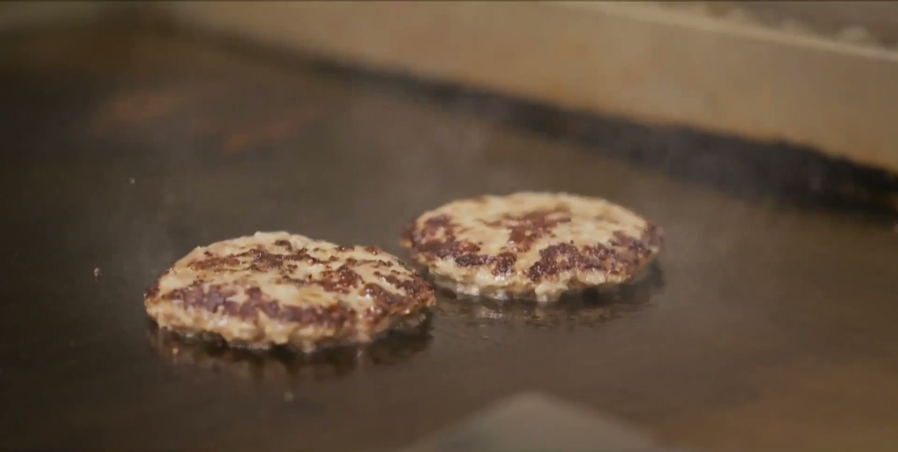

Generations Kitchen
Restaurant Concept
The concept lets the food lead before the menu.

Jarrett Wroten
Work
Restaurant Concept
The concept lets the food lead before the menu.

Restaurant Concept
Pā‘ina means gathering. The kitchen in motion becomes the invitation.
Pending Engagement. The concept is built around the hand, the cut, and the way a gem changes in the light.

Tattoo Artist - In Progress. The concept is built around scale, body flow, and the choice to start a long project.

Book at least 24 hours ahead. Add your current website to the form, and I’ll build your concept before our call.
The Leak
I follow the path from first click to sale, find where people drop out, and build the finished fix.
Follow the real path
01 — Look I walk through your site like a real customer.
02 — Find the break I find the first key step where the path breaks.
03 — Build the fix I build the page, form, or follow-up that fixes it.
One real result
$40,114.81
Gross volume $40,114.81 · up 104.51% from $19,615.40
Net volume $37,914.00 · up 108.02% from $18,225.83
This was one Las Vegas service business, from May 15 to June 15, 2026. Your result will depend on your business.
Built by Jarrett
You work with me from the first look through the finished fix.
Your first look is free
Tell me what you want more of. I’ll show you the first place the path breaks and what I’d change. If it’s worth fixing, we can build it together.
Swipe to follow
The Leak
I follow the path from first click to sale, find where people drop out, and build the finished fix.
Follow the real path
I walk through your site like a real customer.
I find the first key step where the path breaks.
I build the page, form, or follow-up that fixes it.
One real result
Gross volume $40,114.81 · up 104.51% from $19,615.40
Net volume $37,914.00 · up 108.02% from $18,225.83
This was one Las Vegas service business, from May 15 to June 15, 2026. Your result will depend on your business.
Open the full Stripe view
Built by Jarrett
You work with me from the first look through the finished fix.
Tell me what you want more of. I’ll show you the first place the path breaks and what I’d change. If it’s worth fixing, we can build it together.